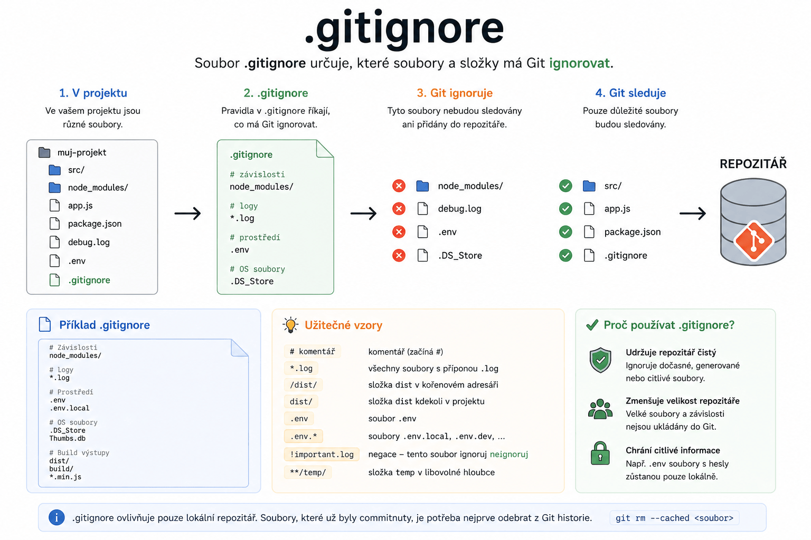

Git – Jak správně aktualizovat .gitignore a odstranit sledované soubory
Praktický průvodce, jak zajistit, aby Git ignoroval i soubory, které už dříve sledoval.

Proč aktualizovat .gitignore?
- Soubor
.gitignoreříká Gitu, které soubory nemá sledovat. - Pravidla
.gitignorese aplikují pouze na soubory, které Git zatím nesleduje (untracked).
Note
Soubory, které už Git sleduje, je potřeba odebrat z indexu ručně.
Postup krok za krokem
Varianta A: Odebrání konkrétní složky
Zkontroluj, že v
.gitignoremáš řádek:.idea/Odeber složku z Git indexu (ale ne z disku):
git rm -r --cached .ideaUlož změny:
git commit -m "Remove .idea from tracking"
Varianta B: Hromadné odebrání všech sledovaných souborů a znovu přidání podle .gitignore
Odeber všechny soubory z indexu:
git rm -r --cached .Znovu přidej soubory podle
.gitignore:git add .Commitni změny:
git commit -m "Refresh .gitignore rules"
Warning
Tento postup odstraní všechny soubory z Git indexu a znovu je přidá.